This lesson is designed to provide you with experience in running statistical analyses in R. We will use water quality data as an example, but these analyses can be applied to many other datasets, provided the statistical assumptions are met. We will cover the following topics:
Correlation analyses (Pearson and Spearman) and plots
Linear regression and plots
T-tests and Wilcoxon rank sum test (aka Mann-Whitney)
ANOVA
Note
Disclaimer
This lesson teaches the implementation of multiple statistical analyses, rather than the background behind why, when, and what to check when choosing a statistical analysis. You should always check the underlying assumptions of an analysis and whether your data meet those assumptions.
We are adding a few new packages today which perform specialized functions for statistical analyses. You don’t need to worry about the new packages too much, other than you will need to install and load the libraries.
The main packages that we will use in this tutorial are:
tidyverse
lubridate
Hmisc
corrplot
ggpmisc
ggpubr
Before attempting to install these packages, make sure your Primary CRAN Repository is set to:
“New Zealand [https] - University of Auckland”
To check this, click ‘Tools’ –> ‘Global Options’ –> ‘Packages’. Click ‘Change’ if you need to adjust this.
You can download most packages by clicking on the ‘Install’ button on the ‘packages’ tab in the lower right window pane. Then in the Install Packages popup, select ‘Repository (CRAN)’ from the ‘Install from’ drop box and type the name of the package you wish to download (e.g., dplyr).
Once all of these packages are installed you can load them using the library function:
library(tidyverse)
Warning: package 'tidyverse' was built under R version 4.4.3
Warning: package 'ggpmisc' was built under R version 4.4.3
Warning: package 'ggpp' was built under R version 4.4.3
library(ggpubr)
First we will load in our data. We will use the same water quality data from Lesson 3. This data has been downloaded from Aquarius using the R script which you can find at scripts/download_data_aquarius.R if you’d like to see how the data were downloaded. For today, we are skipping that step and reading in directly from a .csv file which was written after the Aquarius download.
wq <-read.csv('./data/Lake_WQ_Timeseries.csv')
Now, look at the wq dataframe by clicking on it in the environment and familiarise yourself with the columns. You can also run the function colnames(wq) in the console to get a list of column names. It’s better to run this in the console (rather than in your script editor), since it is a diagnostic test and not something you will necessary need to run every time you open your script–just as needed.
colnames(wq) # you don't have to save this in your script, but can copy it into the console
As we know from previous lessons, it is always best practice is to format date/time objects with the appropriate timezone, otherwise R will assume a timezone, and that can lead to the wrong date being set for your timestamp. This is the first thing I do when I see I have a datetime object as a column. Let’s use a bit of code that will parse our Time column, which includes both a date and a time.
Here, we will use a function called parse_date_time which looks at the Time column, and then provides a list (using c()) of potential formats that the column will be in. Here, we list two formats, the first one has YMD and HMS (hours, minutes, seconds), the second one just has YMD, as some of the values in the Time column don’t have an associated time next to the date. We pair this with the mutate function to re-write our Time column.
NOTE: there are many ways to format/parse dates and times in R. This is just one example!
[1] "Lake Rotoma at Site 1 (Integrated)"
[2] "Lake Rotoehu at Site 3 (Integrated)"
[3] "Lake Rotoiti at Site 4 (Integrated)"
[4] "Lake Rotoiti at Site 3 (Integrated)"
[5] "Lake Rotoiti at Okawa Bay (Integrated)"
[6] "Lake Rotorua at Site 2 (Integrated)"
[7] "Lake Okataina at Site 1 (Integrated)"
[8] "Lake Okareka at Site 1 (Integrated)"
[9] "Lake Tikitapu at Site 1 (Integrated)"
[10] "Lake Rerewhakaaitu at Site 1 (Integrated)"
[11] "Lake Okaro at Site 1 (Integrated)"
[12] "Lake Rotorua at Site 5 (Integrated)"
[13] "Lake Tarawera at Site 5 (Integrated)"
[14] "Lake Rotomahana at Site 2 (Integrated)"
That helps us get a better understanding of the dataset that we’re working with and is something I will do often while working in R to remind myself.
Since we are going to do correlation analysis first, let’s focus on just one site and look at the relationships between variables in the Parameter column. We will filter the data to only select “Lake Okaro at Site 1 (Integrated)” and we will create a new dataframe named wq_okaro so we keep all the other lake data in the wq dataframe.
wq_okaro <- wq %>%filter(LocationName=='Lake Okaro at Site 1 (Integrated)')
Let’s also clean up the dataframe and only select the columns which are useful to us right now
Alright, we have a time series of four variables. There are many things we can do to analyse this data. Let’s start with a correlation analysis.
2 Correlation analysis and plots
A correlation analysis is used to assess the magnitude and direction of the relationship between two variables. It does not necessarily imply casuation, but shows you how two variables change together.
We will use the function rcorr and corrplot to create and visualize our correlation analysis. In order to conduct a correlation analysis, we need to do some formatting/rearranging. First, we need to make the data wide, but we also have to create a Date column which doesn’t include the time so that it is common across the variables. We will also remove the Unit column for this reason (and we don’t need that column for this anyway since the units are stored in the Parameter names)
Open up your new okaro_wide data and check it out. Those column names have gaps and symbols in them, which might cause us problems later. Let’s rename the columns using the function rename. I’ll show you one example
okaro_wide <- okaro_wide %>%rename('chla_mgm3'="CHLA (mg/m^3)") # the format is new name = old name
Challenge 2:Rename the remaining variable columns to TN_gm3, TP_gm3, and secchi_m.
Great, your okaro_wide dataframe should now have the columns Date, chla_mgm3, TN_gm3, TP_gm3, and secchi_m.
The next thing we need to do in order to run the correlation analysis is to remove the Date column. We aren’t interested in how date is correlated with chl-a, TN, TP, or secchi (for this analysis!). Just how they are correlated with each other.
Challenge 3:Use the select function to remove the Date column. Make this a new dataframe called okaro_corr.
Click to see a solution
okaro_corr <- okaro_wide %>%select(-Date)
Now we have to make sure there are no NA’s in the data frame, and format it as a matrix. This is simply because the function which runs the correlation analysis, rcorr, is picky, so we have to make it happy :) rcorr requires the format of the input to be a matrix, which is a two-dimensional data structure that organizes elements into rows and columns. This is slightly different from a dataframe, which is what we usually use, in that each element in a matrix must be of the same data type, making it a homogenous structure.
okaro_corr <-na.omit(okaro_corr)# note that the function complete.cases() also will do the same trick hereokaro_corr <-as.matrix(okaro_corr)
Now let’s run the correlation analysis using the rcorr function. The default type of analysis is Pearson, which assumes normality. Here, we will specify Spearman because our data are not all normally distributed (as we learned in our histogram plot earlier).
okaro_corr_out <-rcorr(okaro_corr, type ="spearman")print(okaro_corr_out)
Let’s look at that output! The first table is the correlation coefficients (r) and the second is the p-values.
p_mat <- okaro_corr_out$P # this is the matrix of p_valuesdiag(p_mat) <-1# because there are no p-values on the diagonals, we have to insert 1 here for the plot to workcorrplot(okaro_corr_out$r, type ="upper", sig.level =0.05, diag =FALSE, insig ="blank",p.mat = p_mat)
There are lots of ways to cusotmize these plots. You can check them out by googling corrplot and seeing what others have done and running ?corrplot in the console to see what some of the different arguments do. Let’s say we want to actually see what the correlation coefficients are on the plot.
Challenge 4:Remake the plot but add the argument addCoef.col = "black" to display the p-values within each circle.
Challenge 3:Repeat the correlation analysis for Lake Tarawera. How do the correlations compare between the two lakes? Remember, you need to first subset the wq dataframe for Lake Tarawera, then pivot_wider so your columns are your variables, rename your columns to get rid of symbols and spaces, remove the Date column and any NA’s, then run your correlation using rcorr, and then plot your output using corrplot!
Click to see a solution
wq_tara <- wq %>%filter(LocationName=='Lake Tarawera at Site 5 (Integrated)') %>%select(Time, Value, Parameter, Unit)tara_wide <- wq_tara %>%mutate(Date =as.Date(Time)) %>%# keeping these lines in our workflow to remove Time and Unitselect(-Time, -Unit) %>%group_by(Date, Parameter) %>%summarise(Value =mean(Value, na.rm =TRUE)) %>%pivot_wider(names_from ='Parameter', values_from ='Value')tara_wide <- tara_wide %>%rename('chla_mgm3'="CHLA (mg/m^3)",'TN_gm3'="TN (g/m^3)","TP_gm3"="TP (g/m^3)","secchi_m"="VC - SD (m)") %>%ungroup() %>%select(-Date)tara_corr <-na.omit(tara_wide)tara_corr_out <-rcorr(as.matrix(tara_corr), type ='spearman')p_mat <- tara_corr_out$P # this is the matrix of p_valuesdiag(p_mat) <-1# because there are no p-values on the diagonals, we have to insert 1 here for the plot to corrplot(tara_corr_out$r, type ='upper',diag =FALSE,sig.level =0.05, insig ='blank', addCoef.col ='black',p.mat = p_mat)
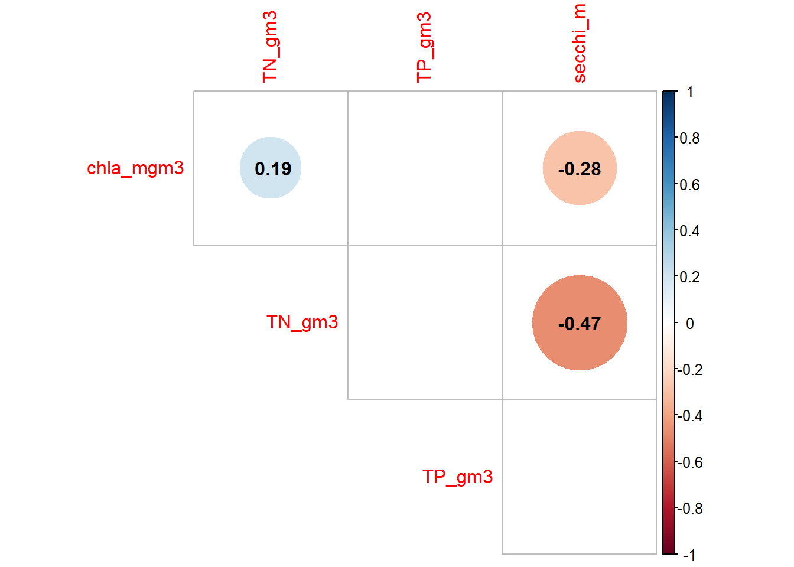
Between Lakes Okaro and Tarawera, we can now see that there are differences in both the strength of correlations, and in what correlations are significant. For example, in Lake Okaro, all the variables show significant correlations, with the strongest relationship between Secchi depth and chl-a (-0.75). In contrast, in Lake Tarawera, only chl-a and TN; TN and secchi; and chl-a and TN are significantly related, and the relationships are much weaker. There are lots of reasons we can dig into here, but a big driver of these different relationships is likely tied to differences in size, trophic state, and catchment characteristics!
3 Linear regression
Next, we will conduct linear regression between two variables which we think are causally related.
Based on our correlation plots above, let’s do this for chl-a and TN in Lake Okaro which have a strong, positive correlation. We will go back to our okaro_wide dataframe for this, which we created earlier. We will use the function lm() to conduct linear regression. Then, we use summary() to shows us the results of the model. We can also run plot(model) to show the residuals of the model and help check out some diagnostics of the model fit.
To plot the linear regression output, we will create a plot with TN on the x-axis and chl-a on the y-axis using geom_point like we ususally do. however, we will also use the function geom_smooth(method = 'lm') which adds a ‘smoothed’ line corresponding to a linear model (that is what the abbrevation ‘lm’ means). We will pair this with the function stat_poly_eq which allows you to also add the statistical output to the plot. You can customize what information you want to show up (equation, listed as ..eq.label.., r-squared, listed as ..rr.label.., etc.)
Warning: The dot-dot notation (`..eq.label..`) was deprecated in ggplot2 3.4.0.
ℹ Please use `after_stat(eq.label)` instead.
Warning: Removed 39 rows containing non-finite outside the scale range
(`stat_smooth()`).
Warning: Removed 39 rows containing non-finite outside the scale range
(`stat_poly_eq()`).
Warning: Removed 39 rows containing missing values or values outside the scale range
(`geom_point()`).
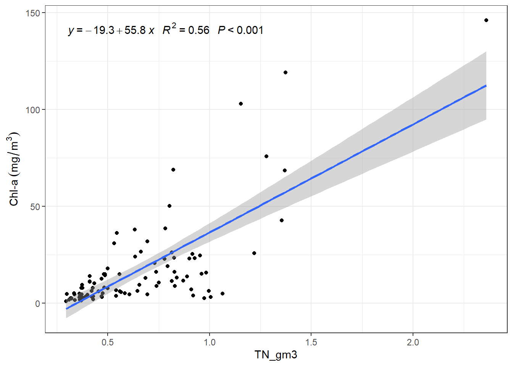
Well, that was easy! We have our summary statistics and a nice plot with our linear regression. The summary(model) shows that both the intercept and slope are significant and our adjusted R-squared is 0.56. However, it’s always good to plot some diagnostics of statistical models and make sure that the proper assumptions are being met.
Let’s look at our residuals. Remember for a linear regression, our residuals should be normally distributed. We will use the function shapiro.test which tests for normality. If the p-value of the Shapiro-Wilk is less than 0.05, that indicates that the variable is not normally distributed.
resid <-resid(model)hist(resid)
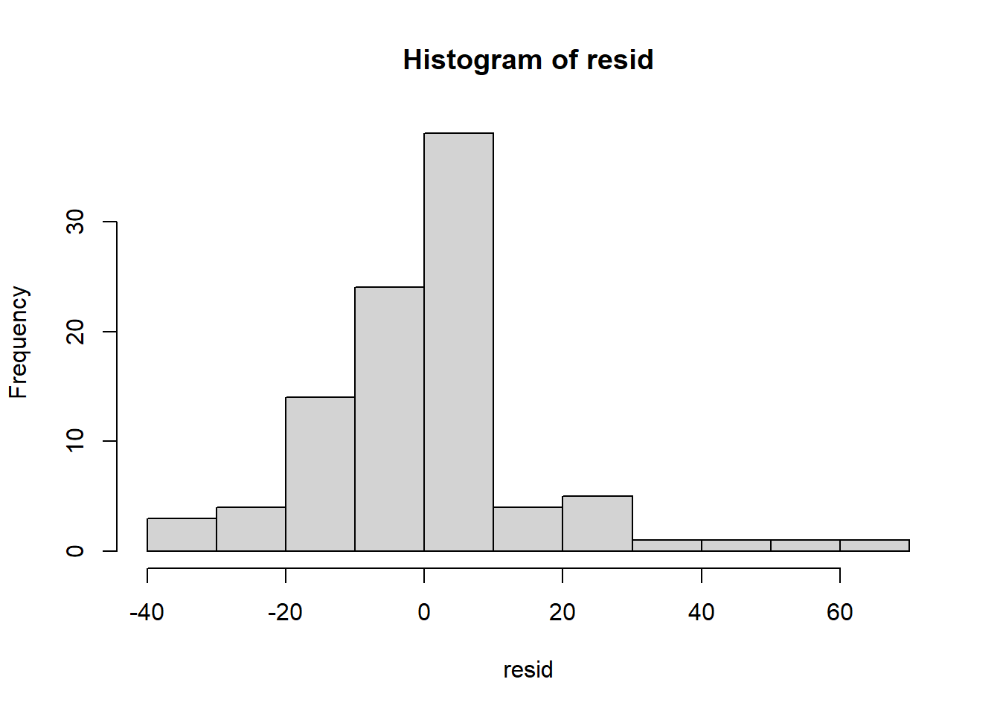
shapiro.test(resid)
Shapiro-Wilk normality test
data: resid
W = 0.9152, p-value = 1.157e-05
Uh oh, the Shapiro-Wilk test returns a p-value of < 0.05, which means our residuals are not normally distributed and we have violated the assumptions of the linear regression–not good! We can address this by transforming our data to try and achieve a normal distribution of the residuals. Typically, you can try by first transforming the response variable, in our case chl-a.
model <-lm(log(chla_mgm3) ~ TN_gm3, data = okaro_wide)summary(model)
Call:
lm(formula = log(chla_mgm3) ~ TN_gm3, data = okaro_wide)
Residuals:
Min 1Q Median 3Q Max
-1.99807 -0.49331 -0.02981 0.61071 1.61268
Coefficients:
Estimate Std. Error t value Pr(>|t|)
(Intercept) 0.7974 0.1815 4.395 2.91e-05 ***
TN_gm3 2.2160 0.2490 8.899 4.03e-14 ***
---
Signif. codes: 0 '***' 0.001 '**' 0.01 '*' 0.05 '.' 0.1 ' ' 1
Residual standard error: 0.7869 on 94 degrees of freedom
(39 observations deleted due to missingness)
Multiple R-squared: 0.4573, Adjusted R-squared: 0.4515
F-statistic: 79.19 on 1 and 94 DF, p-value: 4.028e-14
plot(model)
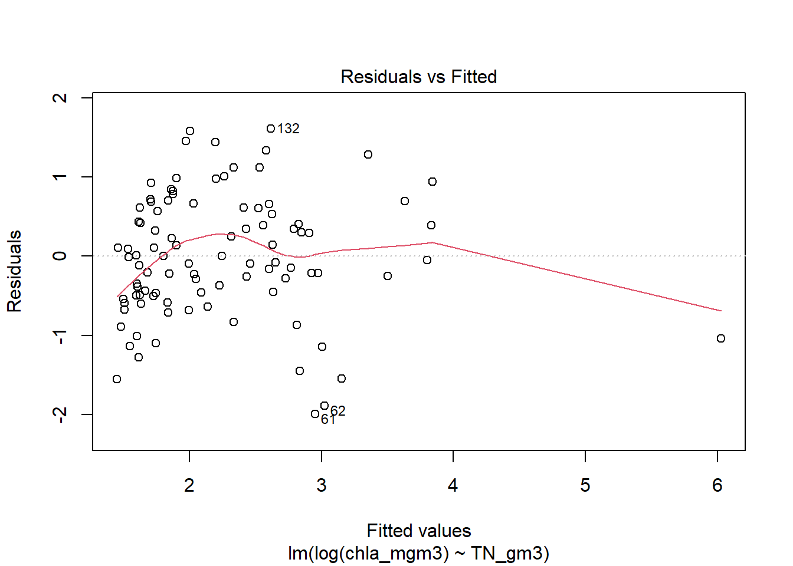
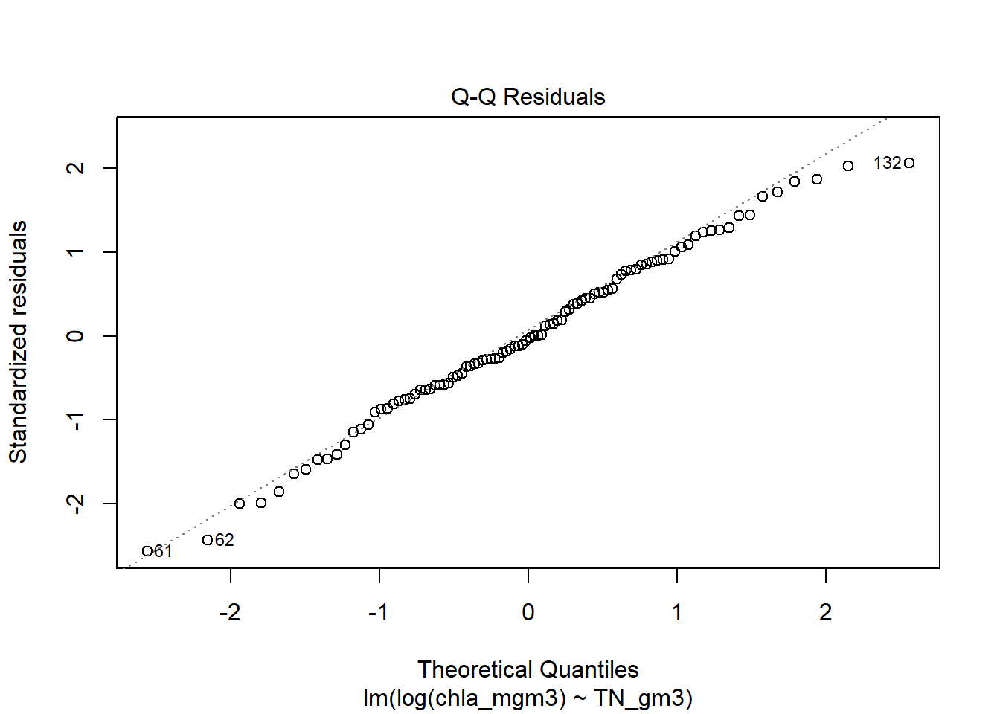
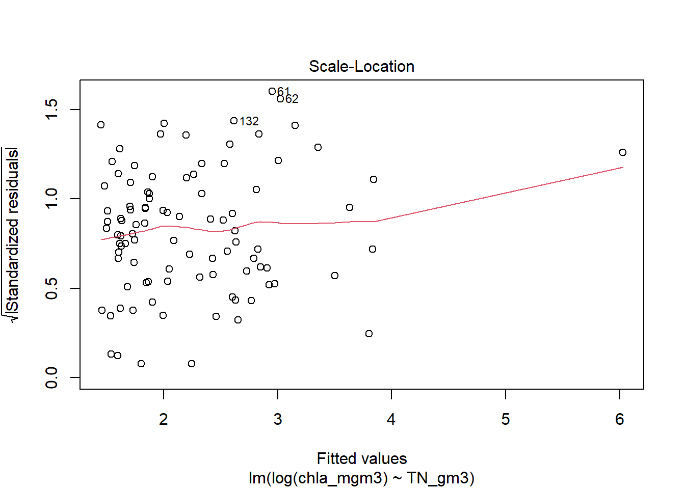
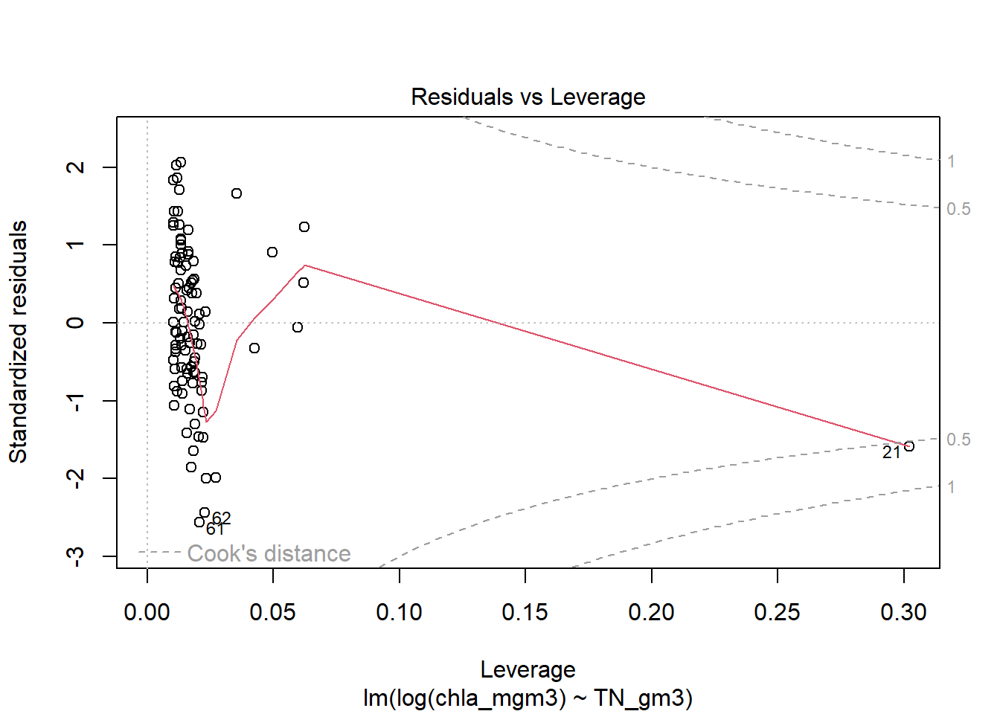
resid <-resid(model)hist(resid)
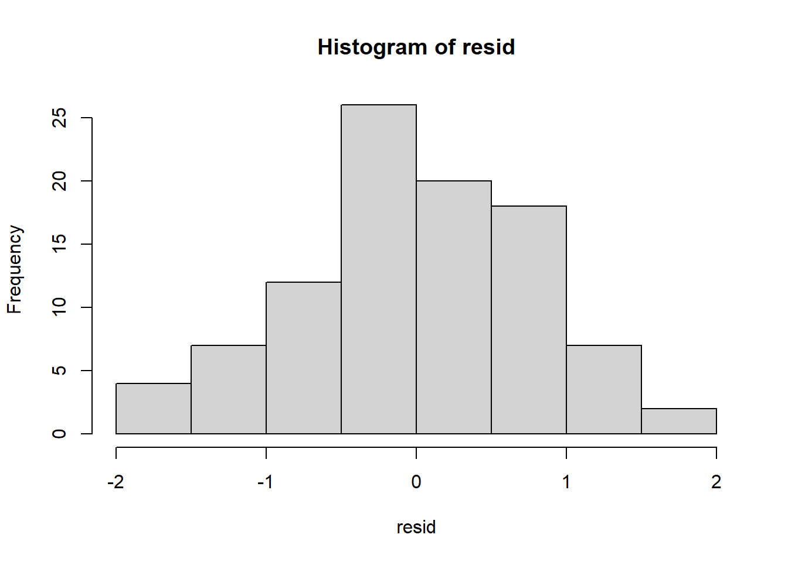
shapiro.test(resid)
Shapiro-Wilk normality test
data: resid
W = 0.99111, p-value = 0.7761
Viola, that looks much better–our p-value is 0.78 after log-transforming chl-a, which indicates that the residuals are normally distributed and the assumptions of a linear regression have been met. Let’s also update our plot with the new model and log transform the y-axis
Warning: Removed 39 rows containing non-finite outside the scale range
(`stat_smooth()`).
Warning: Removed 39 rows containing non-finite outside the scale range
(`stat_poly_eq()`).
Warning: Removed 39 rows containing missing values or values outside the scale range
(`geom_point()`).
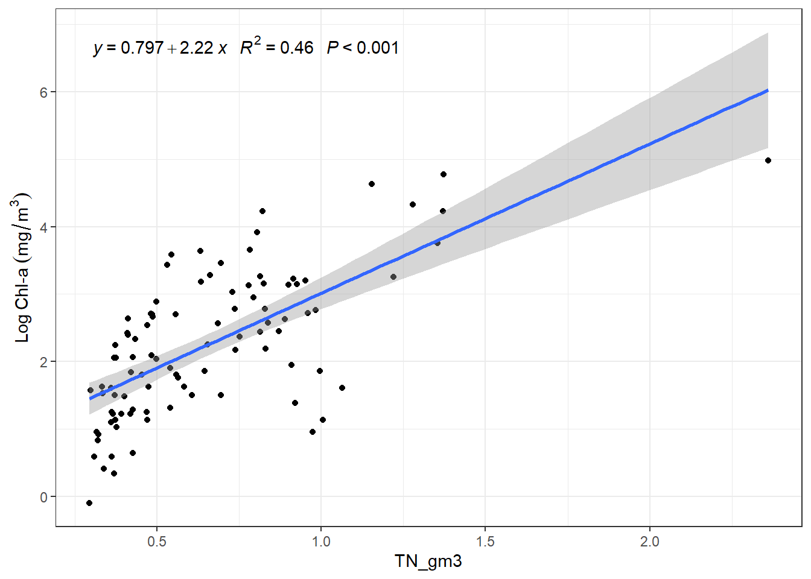
Challenge 4:Repeat the linear regression analysis, this time between chl-a and secchi depth at Lake Okaro. Make a similar plot with geom_smooth and add the equation, R2, and p-value to the plot. Test to see if the residuals are normally distributed and re-adjust your model and plot accordingly.
Warning: Removed 40 rows containing non-finite outside the scale range
(`stat_smooth()`).
Warning: Removed 40 rows containing non-finite outside the scale range
(`stat_poly_eq()`).
Warning: Removed 40 rows containing missing values or values outside the scale range
(`geom_point()`).
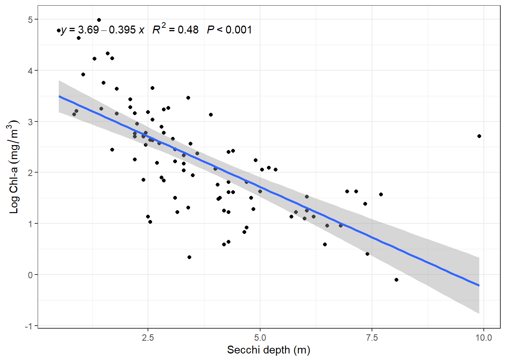
4 Testing for statistical differences between variables
In our next example, we are going to test if there is a statistical difference between two sets of data. We often need to do this in ecology and environmental science for a number of reasons. For example, is the community composition at one site different from another?
In our case, we will test to see if the distribution of a given water quality variable is different between lakes or sites.
Let’s test to see if the data collected at Okawa Bay in the shallower western bay of lake Rotoiti, is significantly different from data collected at Site 4 in Lake Rotoiti, in the much deeper eastern bay of the lake. This will tell us something about how spatially heterogeneous Lake Rotoiti is. Let’s focus on chl-a dynamics, as this relates to algal blooms and is of direct societal relevance.
First, we need to do a little data manipulating to get the data for our two sites in the right format. We will go back to our original wq dataset, select the relevant columns, and filter for our two sites.
wq_rotoiti <- wq %>%select(Time, LocationName, Value, Parameter, Unit) %>%filter(LocationName %in%c("Lake Rotoiti at Okawa Bay (Integrated)", "Lake Rotoiti at Site 4 (Integrated)"))head(wq_rotoiti)
Time LocationName Value Parameter
1 2015-07-21 13:45:00 Lake Rotoiti at Site 4 (Integrated) 0.176 TN (g/m^3)
2 2015-08-18 10:45:00 Lake Rotoiti at Site 4 (Integrated) 0.156 TN (g/m^3)
3 2015-09-15 11:50:00 Lake Rotoiti at Site 4 (Integrated) 0.148 TN (g/m^3)
4 2015-10-20 00:00:00 Lake Rotoiti at Site 4 (Integrated) 0.154 TN (g/m^3)
5 2015-11-17 11:45:00 Lake Rotoiti at Site 4 (Integrated) 0.181 TN (g/m^3)
6 2015-12-15 10:55:00 Lake Rotoiti at Site 4 (Integrated) 0.199 TN (g/m^3)
Unit
1 g/m^3
2 g/m^3
3 g/m^3
4 g/m^3
5 g/m^3
6 g/m^3
Challenge 5:From the Parameter column, we need to select just the chl-a data. Filter the new dataset wq_rotoiti so that the only Parameter is chla.
Click to see a solution
unique(wq_rotoiti$Parameter) # first look at what the values are in this column, then copy the one you need
Now that we have filtered for our sites and for chl-a, we will pivot_wider so our site names are in separate columns. Similar to when we used pivot_wider for Okaro and Tarawera above, we first need to create a Date column (since the time of sample collection is not relevant here), and remove the Unit column.
# A tibble: 6 × 4
Date Parameter Lake Rotoiti at Okawa Bay (I…¹ Lake Rotoiti at Site…²
<date> <chr> <dbl> <dbl>
1 2015-01-20 CHLA (mg/m^3) 15.6 NA
2 2015-02-17 CHLA (mg/m^3) 7.40 NA
3 2015-03-18 CHLA (mg/m^3) 117 NA
4 2015-04-14 CHLA (mg/m^3) 4 NA
5 2015-05-19 CHLA (mg/m^3) 1.9 NA
6 2015-06-16 CHLA (mg/m^3) 3.8 NA
# ℹ abbreviated names: ¹`Lake Rotoiti at Okawa Bay (Integrated)`,
# ²`Lake Rotoiti at Site 4 (Integrated)`
Challenge 6:Ok, our data frame has the columns Date, Parameter, and one for each site at Rotoiti. We don’t actually need the Parameter column anymore, since it’s only chl-a, so let’s remove that. But, let’s rename our site columns to 1) avoid spaces in the column names, and 2) add ‘chl-a’ into the column name so we don’t lose track of what data we are working with. Rename the new columns OkawaBay_chla and Site4_chla
Click to see a solution
rotoiti_wide <- rotoiti_wide %>%select(-Parameter) %>%rename(OkawaBay_chla ="Lake Rotoiti at Okawa Bay (Integrated)", Site4_chla ="Lake Rotoiti at Site 4 (Integrated)")
Next, we need to check if chl-a and TN are normally distributed, which is a requirement for t-tests. You might already have a guess at how this will go based on our shapiro.test results from the linear regression, but here, instead of testing the residuals of our model for normality, we are testing the original data.
shapiro.test(rotoiti_wide$OkawaBay_chla)
Shapiro-Wilk normality test
data: rotoiti_wide$OkawaBay_chla
W = 0.62199, p-value = 9.098e-16
shapiro.test(rotoiti_wide$Site4_chla)
Shapiro-Wilk normality test
data: rotoiti_wide$Site4_chla
W = 0.886, p-value = 1.249e-07
Both sites have a very small p-value, which means they fail the Shapiro-Wilks normality test so, if we want to use a t-test we will need to transform them. Log-transformation is one common way to do this, like we did above with chl-a data at Lake Okaro. We will also look at a histogram of the logged values to visually examine normality.
shapiro.test(log(rotoiti_wide$OkawaBay_chla))
Shapiro-Wilk normality test
data: log(rotoiti_wide$OkawaBay_chla)
W = 0.98838, p-value = 0.4324
shapiro.test(log(rotoiti_wide$Site4_chla))
Shapiro-Wilk normality test
data: log(rotoiti_wide$Site4_chla)
W = 0.98987, p-value = 0.5942
hist(log(rotoiti_wide$OkawaBay_chla))
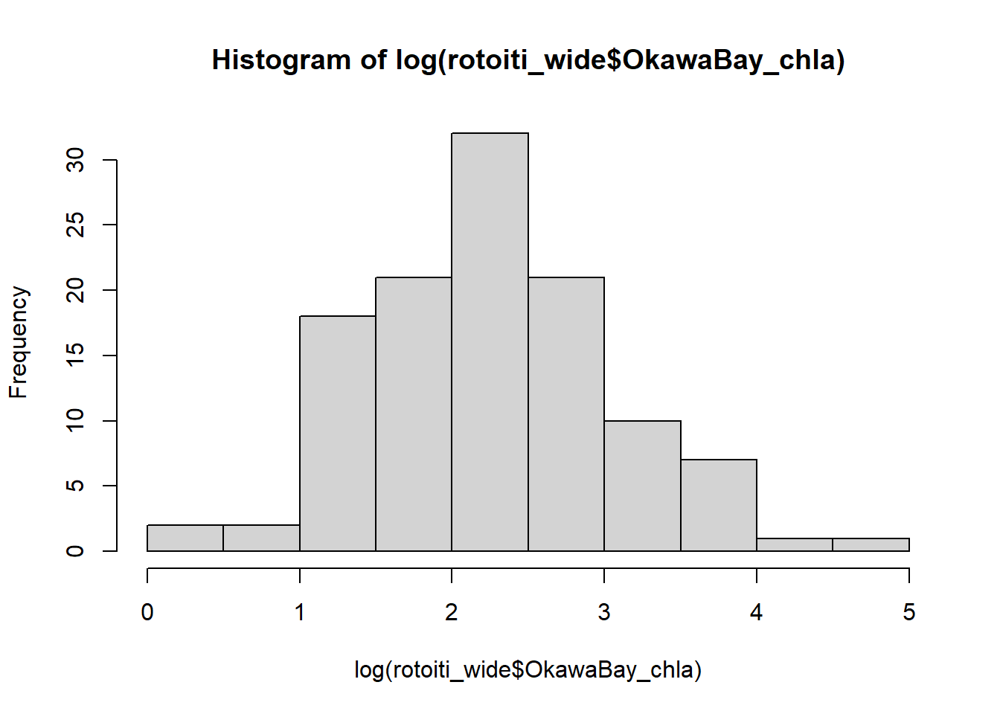
hist(log(rotoiti_wide$Site4_chla))
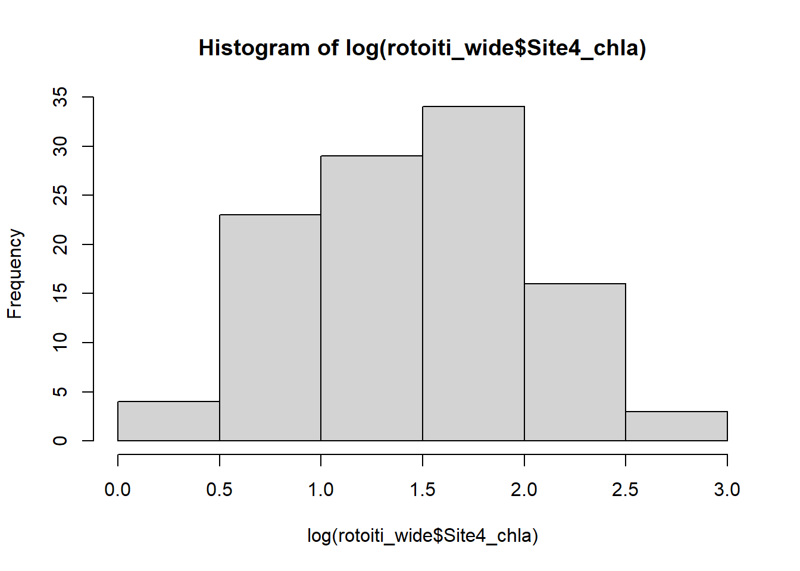
Great, things are looking pretty “normal” after log-transformation, so we are good to go ahead and run a t-test.
NOTE: there is a package called bestNormalize which runs a series of noramlisation tests and allows you to pick the best transformation for your data. This can be a useful tool for figuring out which type of normalization to use (log, sqaure root, etc.), especially if your data do not easily normalize with a log transformation. However, we will not go into details on how to use this package today as a log transformation works well in our case, just want you to be aware of it for future use!
4.1 T-test
Let’s also create a boxplot which will show the distributions of data at each site. We will need to pivot_longer again to show the boxplots with the sites on the x-axis, so we will do this in the tidyverse pipe style, without creating a new object.
Paired t-test
data: log(rotoiti_wide$OkawaBay_chla) and log(rotoiti_wide$Site4_chla)
t = 8.5839, df = 65, p-value = 2.689e-12
alternative hypothesis: true mean difference is not equal to 0
95 percent confidence interval:
0.6182031 0.9930897
sample estimates:
mean difference
0.8056464
Warning: Removed 92 rows containing non-finite outside the scale range
(`stat_boxplot()`).
Warning: Removed 92 rows containing non-finite outside the scale range
(`stat_compare_means()`).
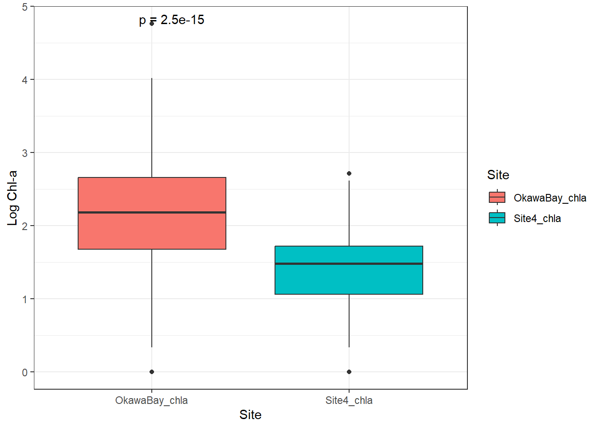
The results of our t-test show that these two sites are significantly different from each other. This isn’t too surprising given that Okawa Bay is a much shallower, isolated bay on the western end of Lake Rotoiti, while Site 4 is located in the much deeper main basin. Visually inspecting the boxplots also supports this. Cool!
4.2 Wilcoxon rank sum
Now, let’s say we didn’t want to log-transform our data. We can use non-parametric statistical tests to look for differences between non-normally distributed datasets. We will use the Wilcoxon rank sum test for this (sometimes called the Mann-Whitney test).
Let’s run the test using the wilcoxon.test function, and also create our boxplot figure. We will use the argument paired = TRUE in our Wilcoxon test because these samples were taken at roughly the same time and are expected to be representative of similar conditions at both sites.
Wilcoxon signed rank test with continuity correction
data: rotoiti_wide$OkawaBay_chla and rotoiti_wide$Site4_chla
V = 2046.5, p-value = 1.877e-09
alternative hypothesis: true location shift is not equal to 0
Warning: Removed 92 rows containing non-finite outside the scale range
(`stat_boxplot()`).
Warning: Removed 92 rows containing non-finite outside the scale range
(`stat_compare_means()`).
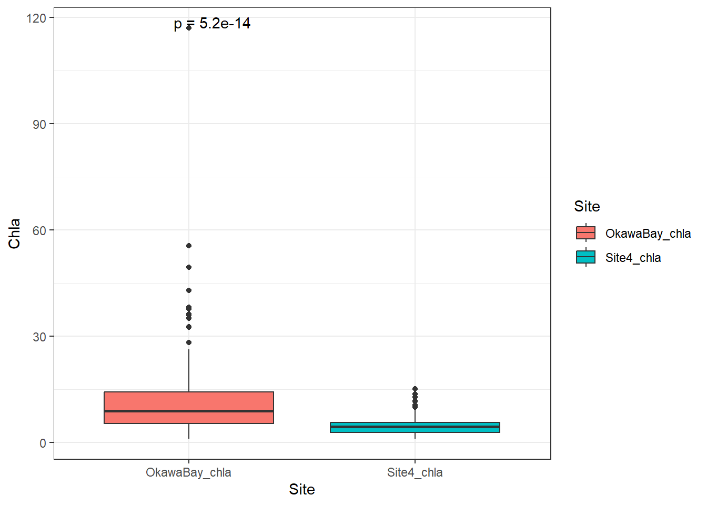
With the Wilcoxon rank sum test on our raw data, we also show that there is a statistical difference between these two sites. Pretty cool to see that two locations within the same lake are significantly different from each!
__
Challenge 7:Run either a t-test or a Wilcoxon rank sum test to test if there is a significant difference between Lake Rotoiti at Site 4 and Lake Rotorua at Site 5. You can choose whichever water quality variable you’d like to look at. Remember, you will need to start with the wq dataframe, select the relevant columns, filter LocationName and Parameter. Then you will pivot_wider (don’t forget to make a Date column and remove Unit), rename your columns, and run your statistical test plus a plot! HINT: Samples are not collected on the same date between Rotorua and Rotoiti, so you will need to format your dates as Month-Year (e.g., Jan-2021). You can do this using this line of code within your tidyverse pipe: mutate(Date = format(as.Date(Time), format = '%b-%Y'))
Click to see a solution
rotoiti_rotorua <- wq %>%select(Time, LocationName, Value, Parameter, Unit) %>%filter(LocationName %in%c("Lake Rotorua at Site 5 (Integrated)", "Lake Rotoiti at Site 4 (Integrated)"), Parameter =="TP (g/m^3)")rotoiti_rotorua_wide <- rotoiti_rotorua %>%mutate(Date =format(as.Date(Time), format ="%b-%Y")) %>%select(-Time, -Unit) %>%group_by(Date, LocationName, Parameter) %>%summarise(Value =mean(Value, na.rm =TRUE)) %>%pivot_wider(names_from ="LocationName", values_from ="Value") %>%ungroup()rotoiti_rotorua_wide <- rotoiti_rotorua_wide %>%select(-Parameter) %>%rename(Rotoiti_TP ="Lake Rotoiti at Site 4 (Integrated)", Rotorua_TP ="Lake Rotorua at Site 5 (Integrated)")## if running a t-testt.test(log(rotoiti_rotorua_wide$Rotoiti_TP), log(rotoiti_rotorua_wide$Rotorua_TP))
Welch Two Sample t-test
data: log(rotoiti_rotorua_wide$Rotoiti_TP) and log(rotoiti_rotorua_wide$Rotorua_TP)
t = 3.0868, df = 231.54, p-value = 0.00227
alternative hypothesis: true difference in means is not equal to 0
95 percent confidence interval:
0.05506289 0.24940133
sample estimates:
mean of x mean of y
-3.829669 -3.981901
rotoiti_rotorua_wide %>%pivot_longer(Rotoiti_TP:Rotorua_TP, names_to ="Site", values_to ="TP") %>%ggplot(aes(x = Site, y =log(TP), fill = Site)) +geom_boxplot() +theme_bw() +stat_compare_means(method ="wilcox.test", label ="p.format")
Warning: Removed 3 rows containing non-finite outside the scale range
(`stat_boxplot()`).
Warning: Removed 3 rows containing non-finite outside the scale range
(`stat_compare_means()`).
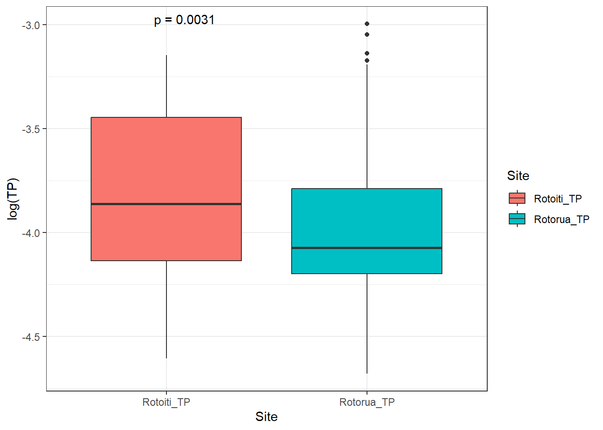
## if running a wilcoxon testwilcox.test(rotoiti_rotorua_wide$Rotoiti_TP, rotoiti_rotorua_wide$Rotorua_TP)
Wilcoxon rank sum test with continuity correction
data: rotoiti_rotorua_wide$Rotoiti_TP and rotoiti_rotorua_wide$Rotorua_TP
W = 8444.5, p-value = 0.003098
alternative hypothesis: true location shift is not equal to 0
rotoiti_rotorua_wide %>%pivot_longer(Rotoiti_TP:Rotorua_TP, names_to ="Site", values_to ="TP") %>%ggplot(aes(x = Site, y = TP, fill = Site)) +geom_boxplot() +theme_bw() +stat_compare_means(method ="wilcox.test",label ="p.format")
Warning: Removed 3 rows containing non-finite outside the scale range
(`stat_boxplot()`).
Removed 3 rows containing non-finite outside the scale range
(`stat_compare_means()`).
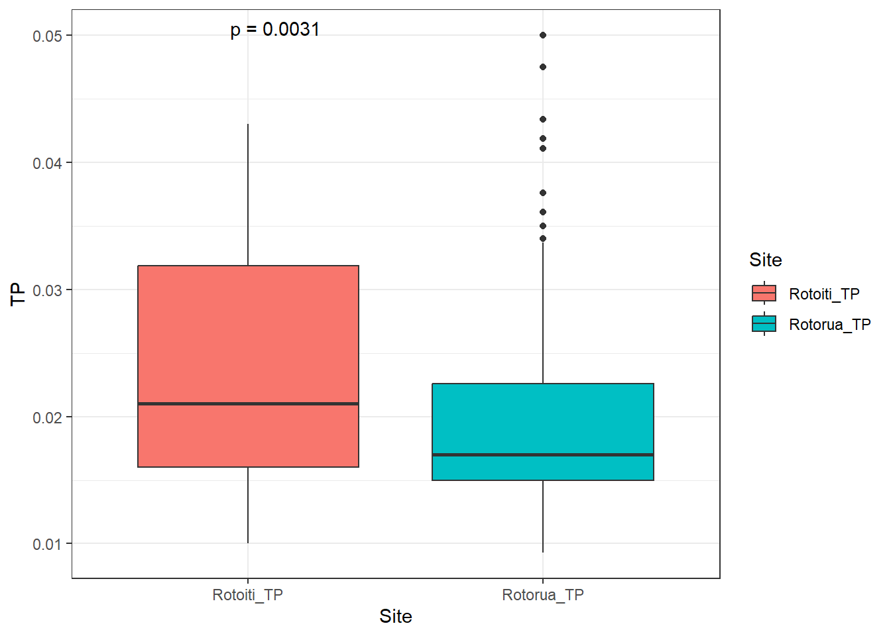
4.3 ANOVA
What if we have more than two variables we want to test for differences across? This is where the ANOVA, or ANalysis Of VAriance comes in. An ANOVA assumes that your response variable is normally distributed and you are comparing differences across categorical predictors.
In this example, we will use an ANOVA to test for differences in secchi depth across season in Lake Okaro.
We will go back to our wq_okaro dataset. First, we need to filter to just secchi depth data and clean a few things up. Then, we test to see if secchi depth is normally distributed, and if not, we will transform it!
Shapiro-Wilk normality test
data: secchi_okaro$log_secchi_m
W = 0.97802, p-value = 0.09311
P-value is greater than 0.05, so that looks better. We will run our ANOVA on log_secchi_m.
Next, we need to create out seasons column, which is the variable by which we want to test if there are differences in Secchi depth. We first create a month column, and then create the season column, which is based on the month. I’ll do this first for ‘Summer’.
Challenge 8:Now, finish creating the season column using case_when for “Autumn”, “Winter” and “Spring”. You will need to add TRUE ~ season as the last argument so that the values we set for Summer in the previous chunk of code remain (i.e., you’re not writing over your summer values you just did).
Now that we have our season column, let’s make a boxplot of the data by season to see if there are any obvious patterns. We will order the season as a factor first to make sure it plots in an order that makes sense.
Ok, there are some clear differences between the seasons here. I have a feeling this ANOVA is gonna be interesting…We will use the function aov to run the ANOVA on the log-transformed column and summary to look at the results.
anova_secchi_okaro <-aov(log_secchi_m ~ season, data = secchi_okaro)summary(anova_secchi_okaro)
Df Sum Sq Mean Sq F value Pr(>F)
season 3 7.668 2.5561 11.31 2.02e-06 ***
Residuals 96 21.689 0.2259
---
Signif. codes: 0 '***' 0.001 '**' 0.01 '*' 0.05 '.' 0.1 ' ' 1
The Pr(>F) is very small, which tells us that there is a significant differences between seasons for Secchi depth.
One last thing we can check is which seasons are different from each other. We can run a Tukey test to see this.
Looking at the p-adj column, we can see which seasons have statistically significant differences. Let’s use a p-value cutoff of p < 0.05 is considered significant. Here, we can see that winter-spring, autumn-summer, and winter-summer are not statistically different from each other. If we look back at our boxplots, this looks like a reasonable result given the differences between distributions of those seasons.
Nice job! You’ve made it to the end of this statistical lesson. If you still have time, you can try running an ANOVA across seasons in another lake. Come to us with any questions!